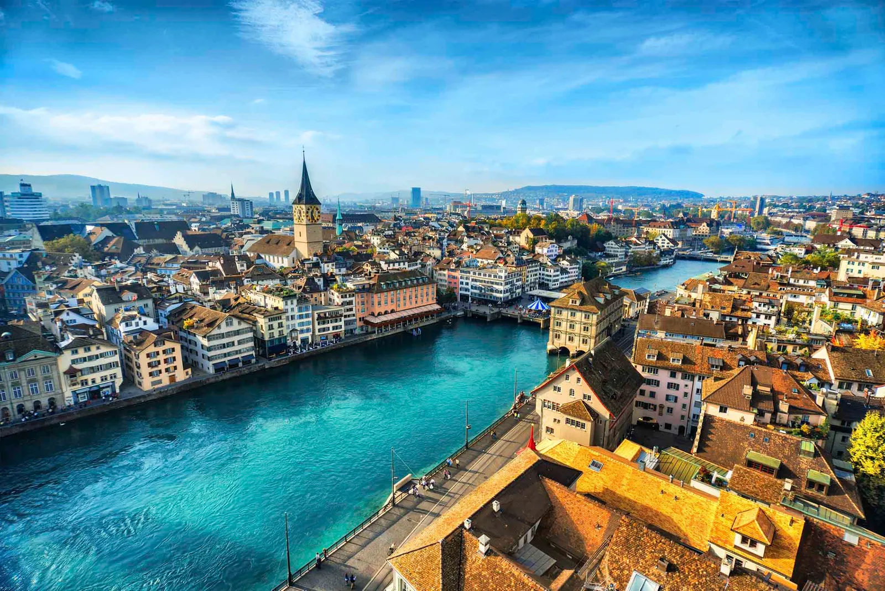
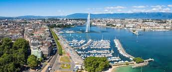
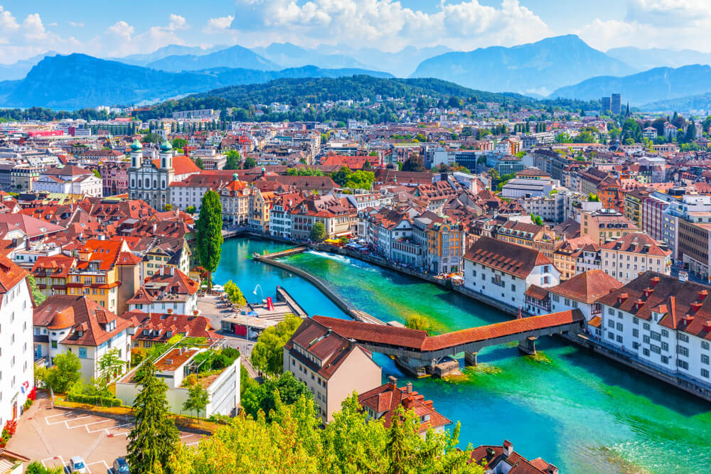

Zúrich

La ciudad de Zúrich, un centro bancario y financiero global, se encuentra al norte del lago de Zúrich en el norte de Suiza. Las pintorescas avenidas de la Altstadt (ciudad antigua) central, a cada lado del río Limago, reflejan su historia premedieval. Los paseos costeros, como el Limmatquai, siguen el río hacia el ayuntamiento Rathaus del siglo XVII.
Ginebra

Se ubica en la punta sur del extenso lago Lemán (lago de Ginebra). Rodeada de las montañas de los Alpes y el Jura, la ciudad tiene vistas del espectacular Mont Blanc. Alberga la sede de la ONU de Europa y la Cruz Roja, y es un centro mundial de la diplomacia y las actividades bancarias. Tiene una amplia influencia francesa, desde el lenguaje hasta la gastronomía y los distritos bohemios como Carouge.
Lucerna

Conocida por su arquitectura medieval conservada, se ubica en medio de las montañas nevadas del lago de Lucerna. La colorida Altstadt (Ciudad Antigua) limita al norte con la muralla Museggmauer de 870 m del siglo XIV. El puente cubierto Kapellbrücke (Puente de la Capilla), construido en 1333, une a Altstadt con la orilla derecha del río Reuss.